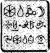

HAVEN ŞEHİR MERKEZİ
KAZMA'NIN Patates Marketi, en mutlu gününüzde bile gitmek isteyeceğiniz yerlerden biri değildi. Kızarmış patatesler yağ içindeydi, et bir garipti ve dondurmaların içinde kıkırdağa benzer pıhtılar vardı. Yine de burası inanılmaz iş yapardı, özellikle de gündönümlerinde.
Tam şu anda, Yüzbaşı Bela Kelp dışarıda lazerlerden kaçmak yerine, bu hazır yiyecek dükkânının içinde oturup lastiği andıran hamburgerlerden birini yiyor olmayı yeğlerdi. Yani neredeyse.
Root ortadan kaldırıldıktan sonra komutanlık Yüzbaşı Kelp’e yüklenmişti. Genelde böylesi bir sorumluluk ona büyük zevk verirdi. Ama genelde ulaşım ve silahlarından yararlanma olanağı olurdu. Neyse ki iletişimlerine bir şey olmamıştı.
Bela ve devriyesi B’wa Kell’in tehlikeli bölgelerini gözden geçirdikleri sırada, yüz kişilik bir sürüngen sürüsü tarafından tartaklanmışlardı. Goblinler çatılara mevzilenip LEP birliğini Yumuşakburun lazerlerle ateş toplarının havada uçuştukları, ölümcül bir ateş hattının tam ortasında yakalamışlardı. B’wa Keli için bu oldukça karmaşık bir düşünce tarzıydı. Sıradan bir goblin aynı anda hem kaşınıp hem de yere tükürebilmeyi başarı sayardı. Emirlerini bir başkasından alıyor olmalıydılar.
Bela’yla yeni yetme onbaşılarından biri fotoğraf kulübesinin arkasında saklandıkları yerde yakalanmışlardı. Geriye kalan adamları Kazma’nın Marketine sığınmayı başarmışlardı.
Şu an için goblinleri taserler ve vızıltı değnekleriyle uzaklaştırabiliyorlardı. Taserlerin on metrelik menzilleri vardı, vızıltı değnekleri ise, yalnızca yakın mesafeler içindi. Her ikisi de elektrikli akülerle çalışıyorlardı ve er geç boşalacaklardı. Daha sonra ellerinde ve avuçlarında hiçbir şey kalmayacaktı. B’wa Keli, LEP’in savaş miğferleriyle donanmış olduğu için görünmez olmak gibi bir şansları da yoktu. Tabii ki bunlar eski model miğferlerdi ama yine de kalkan-savar filtreleriyle uyumluydular.
Bir ateş topu kulübenin üzerinden uçup ayaklarının altındaki asfaltı eritti. Goblinler ne yaptıklarının farkındaydılar. Yani hemen hemen. Kulübeyi havaya uçurmak yerine, üzerinden füzeler uçuruyorlardı. Artık zaman kalmamıştı.
Bela mikrofonuna hafifçe vurdu. “Kelp’ten merkeze. Silahlarla ilgili bir gelişme var mı?”
Hiçbir şey yok, Yüzbaşı,” diye cevap geldi. “Parmakları dışında hiç bir silahları olmayan bir sürü adam. Eski elektrikli silahları şarj etmeye çalışıyoruz ama bu da en az sekiz saatimizi alır. Recon da birkaç tane tam takım zırhlı elbise var. Onları hemen size gönderiyorum. Beş dakika sürer. En fazla.”
“D’Arvit!” diye küfretti yüzbaşı. Yerlerini değiştirmek zorunda kalacaklardı. Kulübe her an yıkılabilirdi. Onlarsa bir goblin ateşinin ortasındaki ördekler gibi kalakalacaklardı. Yanı başında duran onbaşı korkudan titriyordu.
“Tanrı aşkına,” diye tersledi onu Bela. “Toparla kendini.”
“Kes sesini, Bela,” diye sertçe karşılık verdi kardeşi Grub, titrek dudaklarının arasından. “Beni koruman gerekiyordu. Annemiz öyle söyledi.
Bela tehditkârca parmağını salladı. “Görev sırasında, adım Yüzbaşı Kelp’tir, Onbaşı. Ve bilgin olsun diye söylüyorum, seni koruyorum.”
“Ah, beni böyle mi koruyorsun?” diye sızlandı Grub, somurtarak.
Bela küçük kardeşinin mi, yoksa goblinlerin mi onu daha çok rahatsız ettiğini bilmiyordu.
“Pekala, Grub. Bu kulübe fazla uzun süre dayanamayacak. Markete girmek için şansımızı denememiz gerek.
Anlaşıldı mı?”
Grub’ın titrek dudağı birden bire güçlendi. “Hiç şansın yok. Ben yerimden kıpırdamıyorum. Beni zorlayamazsın. Hayatımın sonuna kadar burada kalsam bile umurumda değil.”
Bela siperliğini havaya kaldırdı. “Beni dinle. Dinle, tamam mı? Hayatının sonu, otuz saniye içinde gelecek. Gitmemiz gerek.”
“Ama ya goblinler, Bela.”
Yüzbaşı Kelp kardeşini omuzlarından yakaladı.. “Sen goblinler konusunda endişelenme. Sen yalnızca yavaşlarsan, kıçınla tekmemin yakınlığı konusunda endişelen.” Grub yüzünü buruşturdu. Bu konuda önceden deneyimliydi. “Bunun üstesinden geleceğiz, değil mi, abi?” Bela göz kırptı. “Tabii ki Yüzbaşı ben değil miyim?” Küçük kardeşi başıyla onayladı, dudakları gücünü kaybediyordu.
“Güzel. Şimdi burnunu kapıya dön ve ben söyleyince fırla. Anladın mı?”
Grub bir kez daha başıyla onayladı. Çenesi bir ağaçkakanın gagasından daha hızlı sallanıyordu.
“Pekala, Onbaşı. Hazır ol. Emrimle birlikte ...”
Bir ateş topu daha patladı. Bu kez daha yakma düşmüştü. Bela’nın lastik ayakkabılarından siyah bir duman yükseldi. Yüzbaşı burnunu duvarın kenarından dışarı uzattı. Bir lazer ışını az daha burnuna üçüncü bir delik açacaktı. Katlı, çelik bir tabela, atılan on iki merminin hızıyla köşede dönerek, dans etmeye başladı. Tabelanın üzerinde Foto Finiş yazıyordu. Daha doğrusu Fot Finiş. “O” harfi patlamanın hızıyla uçmuştu. Lazere dayanıklı değildi anlaşılan. Ama yine de işe yarayabilirdi.
Bela yerinde dönen tabelayı alıp bir çeşit zırh gibi omuzlarına koydu. LEP giysileri neutrino bombalarını, hatta ses dalgalarını geçirmeyen mikro-liflerle astarlanmıştı ama Yumuş akburunlar yeraltında uzun yıllardan beri kullanılmadıkları için bu giysiler onlara dayanıklı olarak tasarlanmamıştı. Tek bir mermi bile LEP formasını kağıt gibi yırtardı.
Bela kardeşini arkadan dürttü. “Hazır mısın?”
Grub başını sallamış olabilirdi, ya da tüm bedeni titrediği için ona öyle gelmiş olabilirdi.
Bela bacaklarını altına kıvırıp boyundan geçme tabelayı üstüne yerleştirdi. Birkaç atışa dayanırdı. Ondan sonra, Grub’ı korumak için kendi bedenini kullanacaktı.
Bir ateş topu daha attılar. Doğrudan onlarla Marketin arasına. Bir saniye sonra alev asfaltın içinde bir delik açacaktı. Şimdi gitmeleri gerekiyordu. Ateşin içinden geçmeliydiler.
“Miğferini tak.”
“Neden.”
“Tak onu, Onbaşı.”
Grub denileni yaptı. Bir ağabeyle tartışabilirdi ama emreden bir üstüyle değil.
Bela bir elini Grub’ın sırtına koyup sertçe itti. “Fırla, fırla, fırla!”
Bembeyaz alevin içine daldılar. Bela sıcaktan etkilenen giysisinin içindeki liflerin çatırdadıklarını duydu. Kaynar katran, çizmelerine yapışıp lastik tabanlarını eritiyordu.
Sonra ikisi birlikte kapıya doğru tökezleyerek ilerlediler. Bela siperliğinin üzerindeki isleri temizledi. Adamları koruyucu siperlerin arkasında, birbirlerine sokulmuş bekliyorlardı. İki sıhhiye büyücüsü eldivenlerini çıkartmış, onları içeri çekmeye hazırlanıyordu.
On metre kalmıştı.
Koşarak gidiyorlardı.
Goblinler atışı sürdürüyordu. Çığ gibi yağan kurşun yağmuru, Marketin ön kapısından geriye kalanları toz haline getiriyordu. Bela’nın miğferine bir kurşun isabet edince, başı öne doğru sallanmaya başladı. Yine kurşunlandı. Bu kez daha aşağıdan. Kürek kemiklerinin arasından sıkı bir darbe almıştı. Tabela hâlâ dayanıyordu.
Yüzbaşı çarpışmanın etkisiyle bir uçurtma gibi havalandı ve hızla kardeşine çarpıp onları büyük bölümü yok olmuş ikili kapılara kadar sürükledi. Bir anda toplu gösteri kalkanlarından oluşan bir duvar tarafından içeri çekildiler.
“Grub,” diye soludu Yüzbaşı Kelp, acı, gürültü ve isin arasından. “O iyi mi?”
“İyi,” diye yanıt verdi kıdemli sıhhiye büyücüsü, Bela’yı karın üstü yuvarlayarak. “Öte yandan yarın sabah sizin sırtınızda, çok sayıda morluklar olacak.”
Yüzbaşı Kelp büyücüyü eliyle itti. “Kumandadan haber var mı?”
Büyücü başını olumsuzca salladı. “Hiç haber yok. Root, görev sırasında kayboldu ve Cudgeon yeniden kumandan olarak atandı. Daha da kötüsü, şimdi tüm bunların, Foaly’nin suçu olduğunu söylüyorlar.”
Bela’nın beti benzi attı. Nedeni, sırtındaki ağrı değildi. “Foaly mi? Bu doğru olamaz.”
Bela düş kırıklığıyla dişlerini gıcırdattı. Foaly ile kumandan. Başka çaresi yoktu, bunu yapması gerekecekti. Bu onun en büyük kâbusuydu.
Yüzbaşı Kelp tek dirseğinin üzerinde doğrulmaya çalıştı. Başlarının üzerinde Yumuşakburunlar vızıldıyordu. Her yeri istilâ etmeleri an meselesiydi. Bu işin halledilmesi gerekiyordu.
Bela derin bir soluk aldı. “Pekala, millet. Dinleyin. Polis Plaza’ya çekiliyoruz.”
Birlikler donakaldı. Grub bile bir hıçkırığın arasında kaldı. Çekilmek mi?
“Beni duydunuz!” diye hırladı Bela. “Geri çekiliyoruz. Silahlar olmadan yolları tutamayız. Şimdi kıpırdayın.”
Kaybetmeye alışkın olmayan LEP, ayaklarını sürüyerek servis kapısına yöneldi. Buna ister geri çekilme deyin, ister askeri manevra yine de kaçış sayılırdı. Böylesi bir emrin Bela Kelp’in ağzından çıkacağına kim inanırdı ki?
KUZEY KUTBU MEKİK İSTASYONU
Artemis ve birlikte yolculuk ettiği dostları mekik istasyonuna sığındılar. Holly yolculuğun bu bölümünü Kâhya’nın omzunda tamamladı. Birkaç dakika boyunca bağırarak direndi, ta ki yarbay ona susmasını emredene kadar.
“Az öce çok önemli bir büyü ameliyatı geçirdin,” diye belirtti. “Bu yüzden sessiz ol ve alıştırmalarını yap.” Liflerinin gerektiği gibi kaynaması için Holly'nin bir saat boyunca, parmaklarını sürekli kıpırdatması gerekiyordu. Özellikle de silah kullanacağı için işaret parmağını sonradan kullanmak istediği biçimde hareket ettirebilmesi büyük önem taşıyordu. Issız yolcu salonunda kor gibi yanan bir küpün çevresinde toplandılar.
“Suyu olan var mı?” diye sordu Holly. “Bu tedaviden sonra, kurudum sanki.”
Root göz kırptı, bu çok sık yapmadığı bir şeydi. “İşte arazide öğrendiğim küçük bir numara.” Kemerindeki şarjörden, yassı bir mermi çıkarttı. Plastikten yapılmış ve içi berrak bir sıvıyla doluymuş gibi görünüyordu.
“Bundan, pek fazla içecek bir şey çıkmaz,” diye belirtti Kâhya.
“Tahmin ettiğinden fazlası çıkar. Bu bir Hydrosion mermisi: küçük bir yangın söndürücüsü. Su ufacık bir alana sıkıştırılmış. Onu alevlerin tam ortasına ateşlersen, patlamanın etkisi kompresörü tersine çevirir ve alevlerin üzerine yarım litre basınçlı su püskürtür. Yüz litre dökme sudan daha etkili. Onlara Fışkırtı deriz.” “Çok yararlı,” dedi Artemis, sertçe. “Tabii ki silahlarınızı kullanabilseydiniz. eğer.”
Onlara ihtiyacım yok, dedi Root, büyük bir bıçak çekerek. “Elle de çalıştırılabiliyor.”
Merminin yassı ucunu matarasının ağzına doğrultup kapağını çıkarttı. Mataranın içine sıvı fışkırdı.
“İşte, Yüzbaşı. Asla, kimsenin memurlarımla ilgilenmediğimi söylemesine izin verme.”
“Akıllıca,” diye itiraf etti Artemis.
“Ye en güzeli,” dedi kumandan, boşalan Fışkırtıyı cebine sokarak. “Yeniden kullanılabilir olmaları. Tek yapmam gereken, onu bir kar kümesinin içine gömmek, gerisini kompresör hallediyor, üstelik malzemeleri boş yere harcıyorum diye, Foaly ile tartışmak zorunda da kalmıyorum.”
Holly mataradan uzun bir yudum aldı ve kısa süre içinde yanaklarına yeniden renk geldi.
“Demek, B’wa Kell vurucu timi tarafından pusuya düşürüldük,” diye yüksek sesle düşündü. “Bu ne anlama geliyor?”
“Dışarı bilgi sızdıran biri olduğu anlamına geliyor,” dedi Artemis, ellerini küpün sıcaklığına doğru tutarak. “Bu görevin çok gizli tutulduğunu sanıyordum. Hani Konseyinizin bile bundan haberi yoktu. Burada tek bulunmayan kişi, şu sentor.”
Holly yerinden sıçradı. “Foaly mi? Olamaz.
Artemis avuçlarını havaya kaldırdı. “Bana mantıklı geldi. Hepsi bu.”
“Bunlar çok iyi de” diye sözünü kesti kumandan, “hepsi yalnızca birer varsayım. Durum değerlendirmesi yapmamız gerek. Elimizde ne var ve tam olarak ne biliyoruz.
Kâhya başını salladı. Kumandan içini okuyordu sanki. Onda tam bir asker kafası vardı.
Root kendi sorusunu yanıtladı. “Hâlâ bir mekiğimiz var, içinde izleme aygıtı yoksa tabii. Erzakla dolu bir ambar da var. Çoğunlukla Atlantis yiyecekleriyle dolu. Böylelikle balık ve kalamar yemeye alışırız.”
“Peki şimdi ne yapacağız?”
Artemis yönetimi ele aldı. “Goblinlerin, LEP’ten biriyle haberleştiğini biliyoruz. LEP’in başı, Yarbay Root’u ortadan kaldırmaya çalışıyorlarsa, kuşkusuz cesedin peşine düşmüşlerdir. Başarmak için tek şansları, iki harekâtı bir arada yürütmek.”
Holly dudağını kemirdi. “Yani bu demek oluyor ki...” “Bu demek oluyor ki yeraltında bir çeşit ayaklanma baş göstermiş olabilir.”
“B’wa Kell, LEP’e karşı mı, yani?” diye dalga geçti Holly. “Hiç sorun değil.”
“Genel olarak, bu doğru olabilir,” diye onayladı Artemis. “Ama silahlarınız çalışmıyorsa...”
“Onlarınki de çalışmıyor dur,” diye tamamladı Root, “kuramsal olarak.”
Artemis kordan küpe yaklaştı. “En kötü senaryo şu olabilir: B’wa Kell, Haven’ı ele geçirdi ve Konsey üyeleri ya öldürüldü ya da tutsak edildiler. Açık konuşmak gerekirse, durum kötü görünüyor.”
İki peri de yanıt vermedi. Kötü demek yeterli değildi. Felaket demek, daha uygun düşerdi.
Artemis’in bile cesareti kırılmıştı. Bunlardan hiçbiri, babasını kurtarmaya yardımcı olmuyordu.
“Bir süre burada kalmayı öneriyorum, yanımıza biraz erzak alıp hava kararınca Murmansk’a doğru yola çıkalım. Kâhya bu Vassikin denen adamın dairesini arayabilir. Belki bu kez şansımız yaver gider de babamı orada buluruz. Silahsız olmamızın, bizim için oldukça elverişsiz olduğunun farkındayım ama sürprizler hâlâ bizden yana.”
Uzun bir süre boyunca hiç kimse konuşmadı. Rahatsız edici bir sessizlik' hüküm sürüyordu. Herkes ne söylenmesi gerektiğini biliyordu ama hiç kimse söylemek istemiyordu.
“Artemis,” dedi en sonunda Kâhya, elini çocuğun omzuna koyarak. “Mafya’ya karşı koyacak güçte değiliz. Elimizde hiçbir ateşli silah yok ve dostlarımızın yeraltına dönmeleri gerekiyor, bu yüzden büyümüz de yok. Şu an oraya girersek, bir daha asla çıkamayız. Hiçbirimiz.
Artemis gözlerini kor küpün merkezine dikti. Ama babam, o kadar yakında ki Kâhya. Şu an vazgeçemem.
Holly elinde olmadan, bu vazgeçmeme isteğinden etkilenmişti. Her şeye rağmen, bu kez, Artemis in kimseyi kendi çıkarı için kullanmaya çalışmadığından emindi. O yalnızca babasını özlemiş bir çocuktu. Belki de Holly’nin savunma mekanizması çökmüştü, Artemis için üzülüyordu.
“Vazgeçmiyoruz, Artemis,” dedi Holly, alçak sesle. “Yeniden toplanacağız. Arada bir fark var. Geri döneceğiz. Unutma, şafaktan önce hep alacakaranlık olur.”
Artemis Holly’ye baktı. “Ne şafağı? Kuzey kutbundayız, hatırlasana.”
HAREKÂT ODASI
Foaly kendine kızıyordu. Sistemlerine girdiği bunca güvenlik kodundan sonra, Opal Koboi oraya gezmeye gelmiş ve tüm bilgisayar ağını ele geçirmişti. Ve dahası, yaptığı bu işin karşılığını LEP ödemişti.
Foaly, Opal’in cesaretine hayran kalmıştı. Bu dahice basitlikte bir plandı. Performans artırım kontratı için başvurup en düşük fiyatı ver. LEP’ten sana her yere giriş izni sağlayan bir çip vermesini iste, sonra da tüm yerel sisteme casus kameralar döşe. Gözetleme donanımını bile, LEP’e fatura etmişti.
Foaly, denemek için birkaç düğmeye bastı. Yanıt gelmedi. Yanıt gelmesini, beklemiyordu ya, neyse. Hiç kuşkusuz, Opal Koboi en ufak optik lifin içine kadar, her yere izleme aygıtları yerleştirmişti. Belki de şu an bile onu izliyordu. Foaly onu, bir Koboi Hoverboy™’a kurulmuş plazma ekranının karşısında kıkırdarken hayal edebiliyordu. En güçlü rakibinin mahvoluşunu büyük bir zevkle izliyor olmalıydı.
Sentor hırladı. Opal onu bir kez hazırlıksız yakalamış olabilirdi ama bu bir daha olmayacaktı. Sırf Opal Koboi eğlensin diye, kontrolünü kaybetmeyecekti... Ama kaybedebilirdi, belki de.
Foaly başının ellerinin arasına götürdü ve yenilmiş bir peri görüntüsü sergileyip abartılı hıçkırıklarla ağlamaya başladı. Parmaklarının arasından gizlice çevresine bakıyordu... Bir mini kamera olsam, nereye gizlenirdim, acaba? Tarayıcının denetlemeyeceği bir yere. Foaly dinleme aygıtı tarayıcısına bir göz attı, çatıya bağlı, küçük ama karmaşık görünümlü bir kablo ve çip yığınıydı. Tarayıcının gözden geçirmediği tek yer, süpürücünün içiydi, yani kendisi...”
Ona her ne yarar sağlayacaksa, Opal’in izleme noktasını keşfetmişti. Kamera, tarayıcının içinde gizliyse, ünitenin titanyum çerçevesinin hemen altında küçük bir kör nokta olması gerekirdi, yine de pixie önemli olan her şeyi izleyebilirdi. Foaly’nin bilgisayarları hâlâ çalışmıyordu ve kendisi de Harekât odasının içinde kilitliydi.
Odayı gözleriyle taramaya başladı. Koboi’nin performans artırımından bu yana, buraya ne gelmişti? Etkilenmemiş bir donatım olmalıydı...
Ama çöp dışında bir şey yoktu. Bir rulo optik lifli kablo. Birkaç iletken mandal ve birkaç alet. İşe yarar bir şey yoktu. Sonra, bir bilgisayar ekranının arkasında, bir ışığın parladığım fark etti. Yeşil bir ışığın.
Foaly’nin kalp atışları hızlandı. Işığın nereden geldiğini hemen anlamıştı. Artemis Fowl’un dizüstü bilgisayarı. Modemi ve elektronik postasıyla kullanıma hazırdı. Foaly sakin olmaya çalıştı. Opal Koboi bu bilgisayara bir dinleme aygıtı yerleştirmiş olamazdı. Alet buraya geleli birkaç saat olmuştu. Henüz parçalan bile sökülmemişti.
Foaly araç gereç kutusuna doğru dört nala koştu ve öfkelenmiş gibi yapıp onu plazma fayansların üzerine düşürdü. Bazı kablolar ve tellere takılmayı unuttuğu için kendine fazla kızmadı. Sahte sinir krizinin bir sonraki adımında, çalışma masasının üzerinde çırpınmak vardı. Tabii ki tam olarak Holly’nin dizüstü bilgisayarını bıraktığı noktada çırpınması gerekiyordu. Foaly rasgele bir tekme savurarak, bilgisayarı, tarayıcının kör noktasının olması gereken yere doğru sürükledi. Sonra kendini yere atıp bağırıp çağırarak tepinmeye başladı. Opal mini kameradan yalnızca çırpınıp duran bacaklarını görüyor olmalıydı.
Buraya kadar, her şey yolundaydı. Foaly dizüstü bilgisayarın kapağını açıp hızla hoparlörleri kapattı. İnsanlar bilgisayarlarının en olmadık zamanlarda ötmeleri konusunda ısrarcıydılar. Klavyeyi kullanmak için bir elini serbest bıraktı, kısa süre sonra, e-postasına girmişti.
Ama bir sorun vardı. Telsiz İnternet bağlantısı diye bir şey olduğu doğruydu ama Dünya’nın merkezinden bağlantı kurmak bambaşka bir şeydi. Foaly başını kıvırdığı kolunun içine yerleştirerek, optik bir lif ucunu bir teleskopun çıkışma bağladı. Teleskoplar Amerikan iletişim uydularının içinde saklı duran, gizli iz sürücülerdi. Artık bir anteni vardı. Çamur Çocuğun hattının açık olması için dua etti.
KOBOİ LABORATUARLARI
Opal Koboi hiç bu kadar eğlenmemiş ti. Yeraltı gerçekten de onun oyuncağıydı. Koboi, Hoverboy’unun içinde mutlu bir kedi gibi gerinip büyük bir zevkle plazma ekranlardaki kargaşayı izledi. LEP’in hiç şansı yoktu. B’wa Kell’in Polis Plaza’ya girmesi artık an meselesiydi, sonra şehir onların olacaktı. Sırada Atlantis vardı, sonra da insanların dünyası.
Opal ekranlar arasında gidip geliyor, her ayrıntıyı zihnine kazıyordu. Şehirde silahlı ve kana susamış goblinler karanlığın her noktasından yağıyorlardı adeta. Yumuşakburunlardan çıkan kurşunlar tarihi yapıları kırıp döküyordu. Sıradan periler kendilerini evlerine kilitlemiş, yağmacı çetelerin kendilerine bulaşmamaları için dua ediyorlardı. İşyerleri yağma edilip yakılıyordu. Opal fazla yangın çıkmamasını ümit etti. Bir savaş bölgesinin kraliçesi olmak istemiyordu.
Ana görüntünün içinde bir iletişim ekranı açıldı. Güvenli hatlarında Cudgeon vardı. Ve gerçekten mutlu görünüyordu. Gözlerinde intikamın soğuk sevinci vardı.
“Briar,” dedi Opal, tiz bir sesle. “Bu harika. Keşke sen de burada olup izleyebilseydin.”
“Çok yakında. Şu an askerlerimin yanında olmam gerek. Ne de olsa, Foaly’nin ihanetini ortaya çıkarttığım için Konsey beni yeniden kumandanlığa getirdi. Tutsağımız nasıl?”
Opal, Foaly’nin ekranına baktı. “Açıkçası, düş kırıklığına uğratıcı. Gizli bir plan yapmasını beklerdim. En azından, bir kaçma girişiminde bulunmasını. Ama tek yaptığı kendi kendine üzülüp, çığlık çığlığa tepinmek.
Cudgeon’ın ağzı kulaklarına vardı. “Umarım intihar etmeyi düşünüyordur. Aslında, bundan eminim.” Sonra, yeni terfi etmiş kumandan yine iş konuşmaya başladı. “LEP’ten ne haber? Beklenmedik bir beyin dalgası var mı?
Hayır. Tam tahmin ettiğin gibi. Kabuklarına çekilmiş, kaplumbağalar gibi, Polis Plaza’da gizleniyorlar. Yerel bağlantıları keseyim mi?”
Cudgeon başını salladı. “Hayır. Her hareketlerini, sözüm ona güvenli kanallarından yayınlıyorlar. Hatları açık tut. Ne olur, ne olmaz.”
Opal Koboi ekrana daha da yaklaştı. “Bir daha anlat, Briar. Bana gelecekten söz et.”
Bir an için Cudgeon’ın yüzünde kızgınlık belirdi. Oysa bugün, her günün aksine keyfini uzun süreli gizleyemiyordu.
“Bu sabotajın, kendini kilitlediği Harekât odasından, Foaly tarafından yönetildiği, Konseye anlatıldı. Şimdi senin bir mucize yaratıp Foaly’nin programını yeniden yetkilendirmen ve Polis Plaza’daki DNA toplarının denetimini yeniden LEP’e vermen gerek. Ben bu direnişin kahramanı olacağım, sen de benim prensesim. Bundan sonraki beş yüz yıl boyunca, tüm askeri kontratlar Koboi Laboratuarlarına verilecek.”
Opal’in soluğu boğazına düğümlendi. “Ya sonra?” “Sonra, Dünya’yı bu can sıkıcı Çamur Adamların elinden kurtaracağız. İşte gelecek bu, tatlım.”
KUZEY KUTBU MEKİK İSTASYONU
Artemis’in telefonu çaldı. Bu onun bile asla tahmin edemeyeceği bir şeydi. Dişleriyle eldivenlerinden birini çıkarıp, cep telefonunu Velcro kılıfının içinden hızla çekti.
“Yazılı mesaj,” dedi telefonun menülerini karıştırarak. “Kâhya dışında, hiç kimse bu numarayı bilmez.”
Holly kollarını kavuşturdu. “Anlaşılan, biri daha biliyor.”
Artemis onu duymazdan geldi. “Foaly olmalı. Aylardır telsiz bağlantılarımı izliyordu. Şu an ya bilgisayarımı kullanıyor ya da platformlarımızı birleştirmenin bir yolunu buldu.”
“Anlıyorum,” dedi Kâhya ile Root, bir ağızdan.
Holly tüm bu meslek argosundan etkilenmemişti. “Peki ne diyor?”
Artemis küçük ekrana hafifçe vurdu. Kendin bak.
Yüzbaşı Short cep telefonunu alıp mesajı yüksek sesle okudu. Her satırda yüzü biraz daha ekşiyordu...
KMND ROOT. AŞAĞIDA PRBLM VAR. GOBLNLER HAVN’I İSTİLA ETTİLER. PLİS PLAZA KUŞATILDI. CDGEON + OPL KBOİ İŞİN ARKASINDALAR. SİLH YA DA İLETŞM YOK. DNA TOPLARI KBOİ KNTRLÜNDE. HRKT ODSINDA TUTSAĞIM. KNSEY BNM SÇLU OLDUĞUMU DŞNYOR.. HYATTAYSNIZ LTF YRDM EDİN. DĞLSENİZ YNLŞ NMR.
Holly yutkundu, birden bire boğazı kurumuştu. “Bu iyi değil.”
Kumandan ayağa fırlayıp mesajı bir kez de kendisi okumak için telefonu Holly’nin elinden kaptı.
“Hayır,” diye bildirdi, bir süre sonra. “Kesinlikle olamaz! Cudgeon! Bunca zaman hep Cudgeon’dı. Nasıl oldu da anlayamadım? Foaly’ye bir mesaj gönderebilir miyiz?
Artemis düşündü. “Hayır, burada şebeke yok. Mesajı almamıza bile şaşırdım.”
“Bir şeyler ayarlayamaz mısın?”
“Elbette. Bana altı ay süre, özel bir donatım ve üç kilometre uzunluğunda çelik bir çıta verin yeter.”
Holly burnundan soludu. “Sen de ne büyük bir suç dehasıymışsın.”
Kâhya elini nazikçe Holly’nin omzuna koydu. “Şşşıt,” diye fısıldadı. “Artemis düşünüyor.”
Artemis gözlerini kor küpün sıvı plazma merkezine dikti. “İki seçeneğimiz var,” diye söze başladı, bir süre sonra. Kimse sözünü kesmedi, Holly bile. Ne de olsa, duran zamandan kaçmanın yolunu bulan da Artemis Fowl olmuştu.
“İnsanlardan yardım alabiliriz. Kâhya’nın güvenilmez tanıdıklarından birkaçı yardım etmeye ikna edilebilir, tabii ki para karşılığında.”
Root başını salladı. “Olmaz.”
“Sonradan, bellekleri silinebilir.”
“Bazen siliciler işe yaramaz. En son istediğimiz şey, hafızalarında bir şeyler kalmış, paralı askerler. İkinci seçenek ne?” “Koboi Laboratuarlarını basıp silahların denetimini yeniden LEP’e veririz.”
Kumandan gürültülü bir kahkaha attı. “Koboi Laboratuarlarını basmak mı? Ciddi misin? Tüm binalar, kayaların üzerine inşa edilmiş. Hiç pencere yok, .kurşun ve DNA şok toplarını geçirmez duvarları var. Elemanlardan biri izinsiz girmeye çalışacak olursa, daha yüz metre uzaktayken, sivri kulaklarının arasından vurulur.”
Kâhya ıslık çaldı. “Bir mühendislik şirketi için fazlasıyla yüklü bir donanım.”
“Biliyorum,” diye iç geçirdi Root. “Koboi Laboratuarlarının özel izinleri vardı. Ben kendim imzalamıştım.
Kâhya bir süre düşündü. “Bu yapılamaz,” dedi en sonunda. “Binanın ayrıntılı planı olmadan asla.”
“D’Arvit,” diye küfretti yarbay. “Bunu söyleyebileceğim asla aklıma gelmezdi ama bu iş için uygun olan yalnızca bir peri vardı...”
Holly başıyla onayladı. “Mulch Diggums.”
“Diggums mı?”
“Bir cüce. Suç dosyası kabarık biri. Koboi Laboratuarlarına girip canlı kalmayı başaran tek peri. Ne yazık ki onu geçen yıl malikânenden kaçmaya çalışırken onu kaybettik.”
“Onu hatırlıyorum,” dedi Kâhya. “Neredeyse başımı uçuracaktı. Kaypak bir tipti.”
Root hafifçe güldü. “Zavallıyı sekiz kez tutuklamıştım. Sonuncusu, Koboi Laboratuarları işi sırasındaydı.
Hatırlıyorum da Mulch ve kuzeni kendilerini müteahhit diye tanıtmışlardı. Koruma altındaki tesislerin planını çalmak için iyi bir yöntem. Koboi kontratını almayı başardılar. Mulch kendine açık bir kapı bıraktı. Tam Diggums’a göre bir şey, önce gezegenin altındaki en iyi korunan tesise zorla girmeyi başarıyor, sonra da bir simya fıçısını adamlarımdan birine satmaya çalışıyor.”
Artemis dikleşti. “Simya mı? Simya fıçılarınız mı var.”
“Boş yere ağzın sulanmasın, Çamur Adam. Deneysel amaçlı bir şey. Kitabın dediğine göre, eski büyücülerin kurşunu altına dönüştürmek gibi bir yetenekleri varmış ama sonra bu sır kaybolmuş. Opal Koboi bile bunu henüz başaramadı.”
“Ah,” dedi Artemis, düş kırıklığı içinde.
“İster inan, ister inanma ama bu suçluyu özledim. İnsanları öyle bir aşağılama tarzı vardı ki...” Root gökyüzüne baktı. “Acaba şu an cennetten, bizi izliyor mudur?” “Öyle de denebilir,” dedi Holly, suçluluk duyarcasına. “İşin aslı, Kumandan, Mulch Diggums şu an Los Angeles’da.”